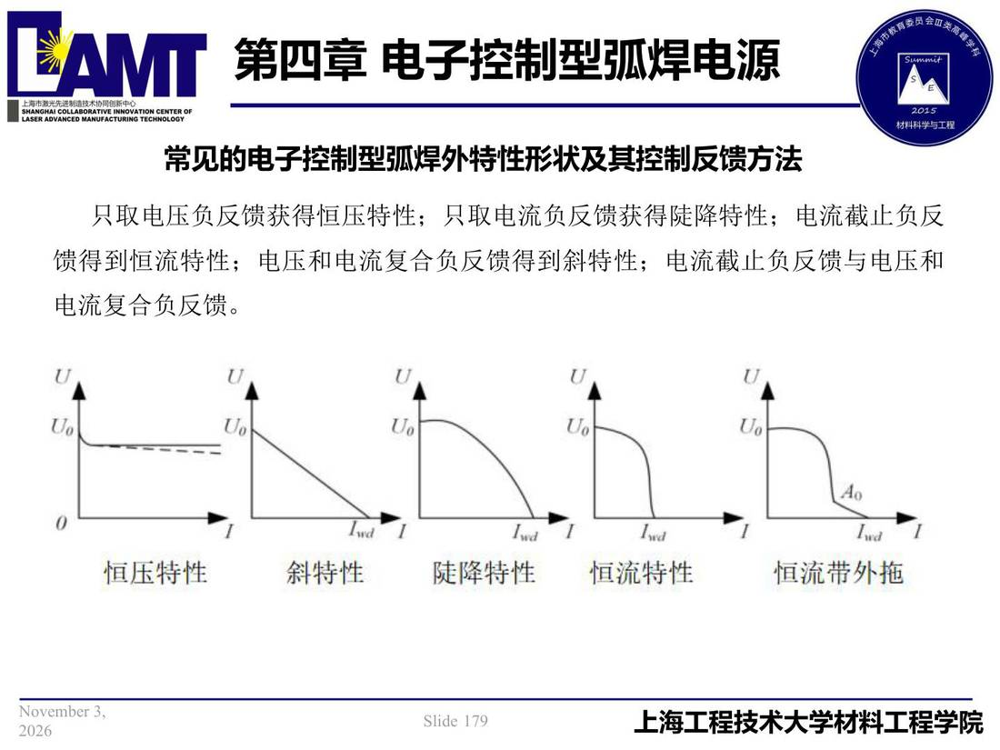

04 第4章 电子控制型弧焊电源/p179 常见的电子控制型弧焊外特性形状及其控制反馈方法
p179 常见的电子控制型弧焊外特性形状及其控制反馈方法
📄 原文：📄 弧焊电源 课件（PDF 第 179 页）（幻灯片 179/273；PDF 第 179 页）
常见的电子控制型弧焊外特性形状及其控制反馈方法

讲义原文
只取电压负反馈获得恒压特性；只取电流负反馈获得陡降特性；电流截止负反馈得到恒流特性；电压和电流复合负反馈得到斜特性；电流截止负反馈与电压和电流复合负反馈。
关联
- ← p178 · 本章索引 · p180 →
- 同组：4.3.1 基本原理 · 全章：电子控制型
- 概念卡：反馈控制与外特性形状